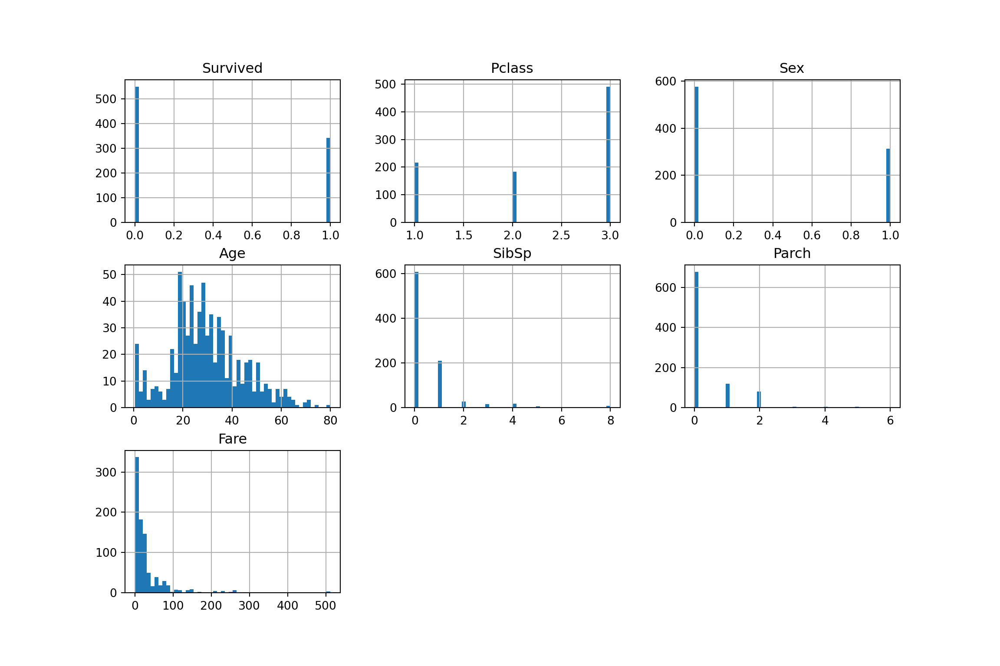
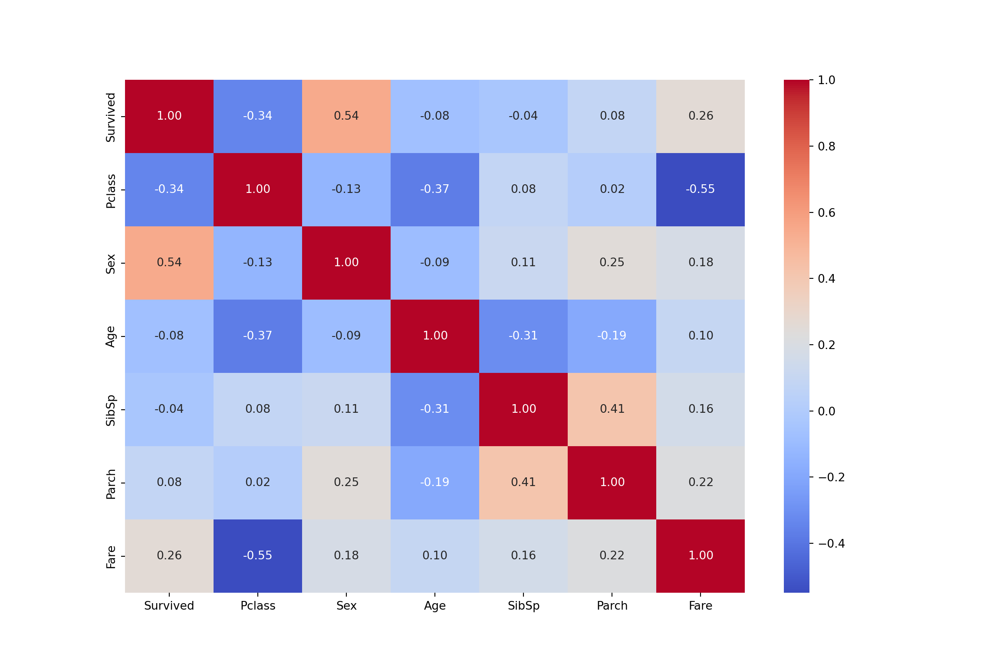
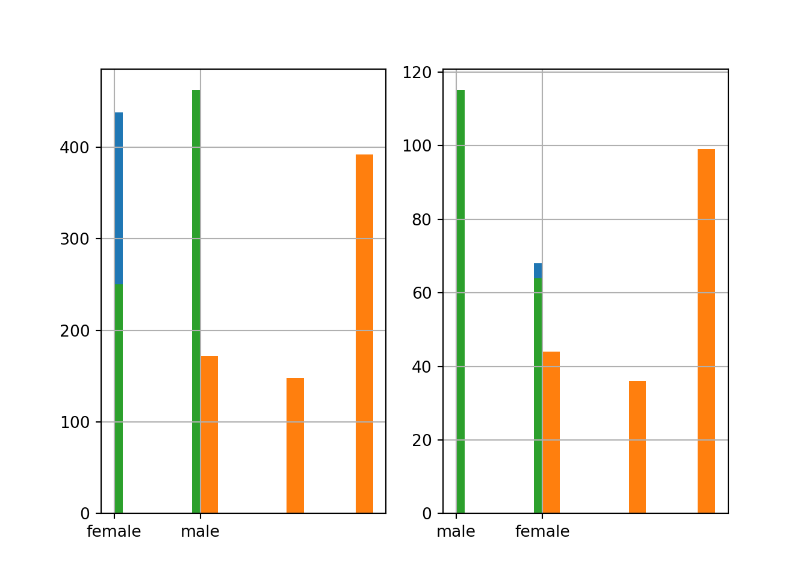

Binary classification: titanic dataset
Introduction
The Titanic dataset is one of the most well-known datasets in data science publicly available on Kaggle. It has become particularly popular for binary classification tasks, allowing data scientists and enthusiasts to predict whether a passenger survived or did not survive the sinking of the ship.
Each row in the dataset represents a passenger, with multiple features. Below is a brief overview of them:
This dataset comes from the Titanic: Machine Learning from Disaster competition on Kaggle. When you download the dataset, you will receive three primary files:
train.csv, containing the training data, which includes the features of the passengers and the target variable. We will use this data to train our model;
test.csv, which, unlike in typical machine learning workflows (where the “test” set is used to evaluate the performance of the model), does not include the
Survivedcolumn. We will use this data to generate predictions with our trained model and submit these survival outcomes to Kaggle for evaluation;gender_submission.csv, which provides a sample submission format, where we must include the
PassengerIdandSurvivedcolumns. The values in theSurvivedcolumn will be the predictions from our model.
Here, we will explore how to use this data to build a step-by-step binary classification model to predict passenger survival on the Titanic.
Exploratory Data Analysis and Data Preprocessing
In this section, we will look for correlations of important categorical and numerical features; then we´ll create new features or modifying existing ones to improve model performance (Feature engineering); The next step will be to split our data in training and test sets, and handle missing data; Following that, we’ll encode categorical variables, that is convert categorical data into a numerical format for use in our ML models; Finally, we’ll build a pipeline using scikit-learn to streamline these processes.
Moreover, you can find the complete code in this Jupyter notebook.
First analysis
First of all, we’ll load the data and take a quick glance in its firsts rows and basic statistics:
import pandas as pd, numpy as np
pd.set_option('display.expand_frame_repr', False)
data = pd.read_csv("files/dataset/train.csv")
data_copy = data.copy() # good practice
data_copy.head() PassengerId Survived Pclass Name Sex Age SibSp Parch Ticket Fare Cabin Embarked
0 1 0 3 Braund, Mr. Owen Harris male 22.0 1 0 A/5 21171 7.2500 NaN S
1 2 1 1 Cumings, Mrs. John Bradley (Florence Briggs Th... female 38.0 1 0 PC 17599 71.2833 C85 C
2 3 1 3 Heikkinen, Miss. Laina female 26.0 0 0 STON/O2. 3101282 7.9250 NaN S
3 4 1 1 Futrelle, Mrs. Jacques Heath (Lily May Peel) female 35.0 1 0 113803 53.1000 C123 S
4 5 0 3 Allen, Mr. William Henry male 35.0 0 0 373450 8.0500 NaN Sdata_copy.describe() PassengerId Survived Pclass Age SibSp Parch Fare
count 891.000000 891.000000 891.000000 714.000000 891.000000 891.000000 891.000000
mean 446.000000 0.383838 2.308642 29.699118 0.523008 0.381594 32.204208
std 257.353842 0.486592 0.836071 14.526497 1.102743 0.806057 49.693429
min 1.000000 0.000000 1.000000 0.420000 0.000000 0.000000 0.000000
25% 223.500000 0.000000 2.000000 20.125000 0.000000 0.000000 7.910400
50% 446.000000 0.000000 3.000000 28.000000 0.000000 0.000000 14.454200
75% 668.500000 1.000000 3.000000 38.000000 1.000000 0.000000 31.000000
max 891.000000 1.000000 3.000000 80.000000 8.000000 6.000000 512.329200Categorical features
We will remove some features that may not contribute meaningfully to our predictive analysis:
- Ticket and PassengerId: these features do not offer meaningful insights for predicting survival, as they serve only as unique identifiers for each passenger.
- Cabin: while the cabin number information might indicate passenger status, this column has a high variability and a high proportion of missing values. Given its unreliability, we choose to remove it.
data_copy.drop(['Ticket', 'PassengerId', 'Cabin'], axis=1, inplace=True)You might consider the Name to be an irrelevant feature since it acts as another unique identifier for each passenger. However, upon examining the names, we can see that they include various formats and titles. By extracting the title from the passenger names, we can create a new feature called Title. Before we proceed, let’s take a look at its distribution.
Let’s take the opportunity to create a generic bar plot function for categorical variables.
import matplotlib.pyplot as plt
import seaborn as sns
def barplot(df, variable):
var = df[variable]
plt.figure(figsize=(20, 15))
sns.countplot(x=var)
plt.xticks(rotation=15)
plt.ylabel("Frequency")
plt.show()name = data_copy.Name
data_copy["Title"] = [n.split(".")[0].split(",")[1].strip() for n in name]
barplot(data_copy, "Title")
We will create a function to categorize the titles into more frequent groups, to include later in our pipeline. This function will extract the titles from the passenger names and then categorize less frequent titles. Titles like Don, Dr, Major, Lady, Sir, Col, Capt, Countess, Rev, Jonkheer, and Dona will be grouped under “Other”. Additionally, we will standardize titles like Mlle, Ms, and Mme to Miss and Mrs, respectively.
Numeric features
To a more intuitive view, we can plot the features histogram, which considers only the numerical columns. Since the Sex column is categorical, we’ll convert it into a numerical format, where 0 = male and 1 = female.
data_copy['Sex'] = data_copy['Sex'].map({"male": 0, "female": 1})ax = data_copy.hist(bins=50, figsize=(12, 8))
plt.show()
For further investigation, we can look at the correlation between these numeric features:
correlation = data_copy.select_dtypes(include=['float64', 'int64']).corr()
plt.figure(figsize=(12, 8))
sns.heatmap(correlation, annot=True, fmt=".2f", cmap="coolwarm", cbar=True)
plt.show()
We can observe a strong positive relationship between Sex and Survival (0.543), and a moderate negative correlation between Pclass and Survival (-0.338), which highlights that women had a higher chance of survival, as well as those in higher classes. You may also notice the positive correlation between Fare and Survival, which is explained by the strong negative correlation between Pclass and Fare: higher fares are associated with upper classes.
(Talvez aqui criar uma outra feature: numero de membros na família, algo assim?)
Splitting data
With these relationships in mind, we can now move forward with splitting our data into training and testing sets, using stratified shuffle split to maintain a balanced representation.
from sklearn.model_selection import StratifiedShuffleSplit
split = StratifiedShuffleSplit(n_splits=1, test_size=0.2)
for train_indices, test_indices in split.split(data, data[["Survived", "Pclass", "Sex"]]):
strat_train_set = data.loc[train_indices]
strat_test_set = data.loc[test_indices]To ensure that the stratified shuffle split successfully preserved the balance of the features in both the training and testing sets, we examine the distribution of Survived, Sex and Pclass in each set:
plt.subplot(1,2,1)
strat_train_set["Survived"].hist()
strat_train_set["Pclass"].hist()
strat_train_set["Sex"].hist()
plt.subplot(1,2,2)
strat_test_set["Survived"].hist()
strat_test_set["Pclass"].hist()
strat_test_set["Sex"].hist()
plt.show()